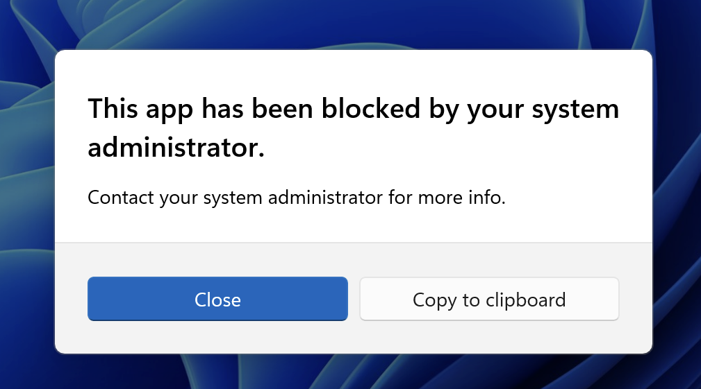

Step 1: Open AppLocker Management
You can use either:
- Local Security Policy (for local policies): Press
Win + R, type secpol.msc and press Enter
- Group Policy Management Console (for domain policies): Open from Administrative Tools
Step 2: Navigate to AppLocker
In the left pane, navigate to: Application Control Policies → AppLocker
Step 3: Create Your Rules
Right-click on any of the following rule types and select Create New Rule:
- Executable Rules (EXE files)
- Windows Installer Rules (MSI files)
- Script Rules (PowerShell, VBScript, etc.)
- DLL Rules (Dynamic Link Libraries)
- Packaged app Rules (StoreApps)
Follow the wizard to create your rules. Remember: when creating allow lists, you must explicitly allow system apps like Settings, Start, Email, etc., as all inbox apps are blocked by default.
Step 4: Export the Policy
Right-click on AppLocker in the left pane and select Export Policy.... Choose a location and save as XML (e.g., applocker-policy.xml).
Step 5: Convert Using This Tool
Upload or paste your exported XML file below. The tool will automatically detect which rule types are available in your policy and enable/disable the appropriate options.
Step 6: Verify Policy Deployment
After deploying via Fleet, verify the policy is applied:
- In Fleet: Check policy status and device compliance in the Fleet console
- Test (Most Reliable): Try running a blocked application - if you see the "This app has been blocked" dialog, the policy is working correctly
- Event Viewer: Check Applications and Services Logs → Microsoft → Windows → AppLocker for deployment events (Event ID 8003) and block events (Event ID 8004)
- Note: Policies deployed via MDM may not always be visible in Local Security Policy GUI, but they are still active and working if apps are being blocked
What Users Will See
When an AppLocker policy blocks an application, end users will see a Windows dialog box indicating that the app has been blocked by their system administrator:

Example of the dialog shown to users when an application is blocked by AppLocker
⚠️ Important: Always test AppLocker policies on a small group of devices before deploying organization-wide. Some policy changes may require a device reboot.